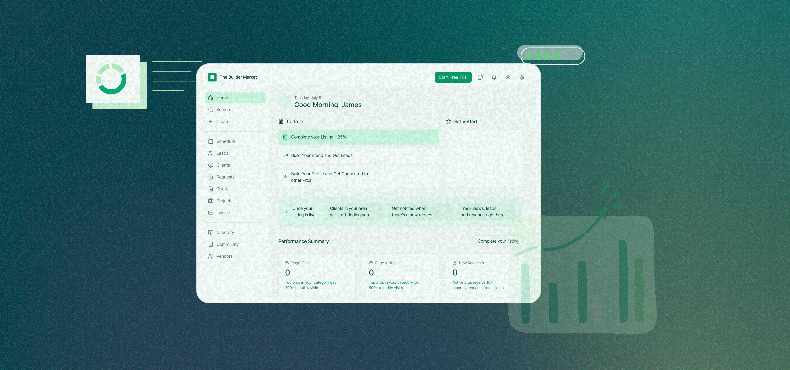
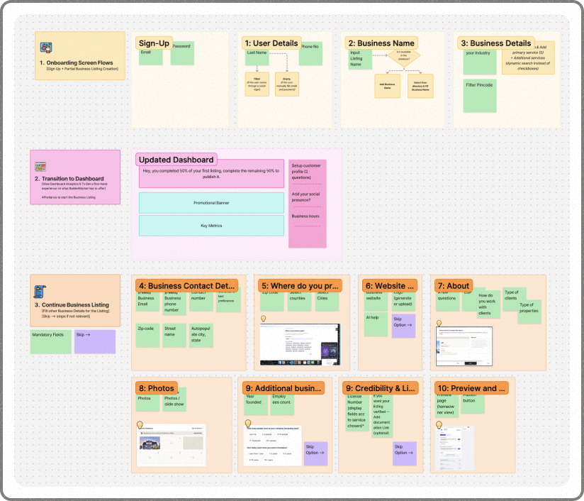
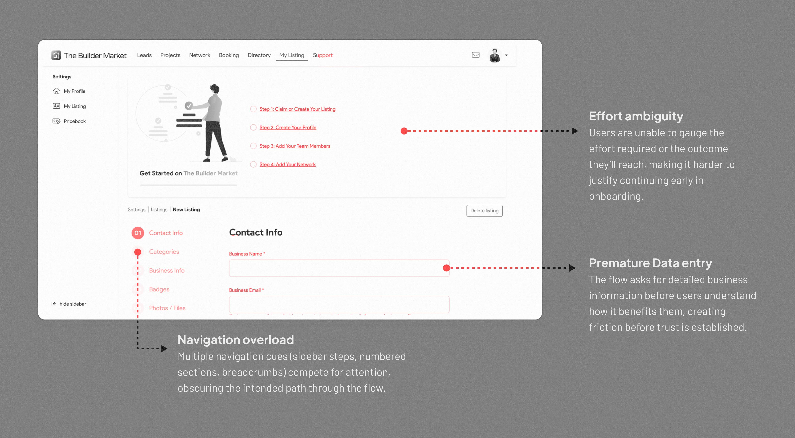
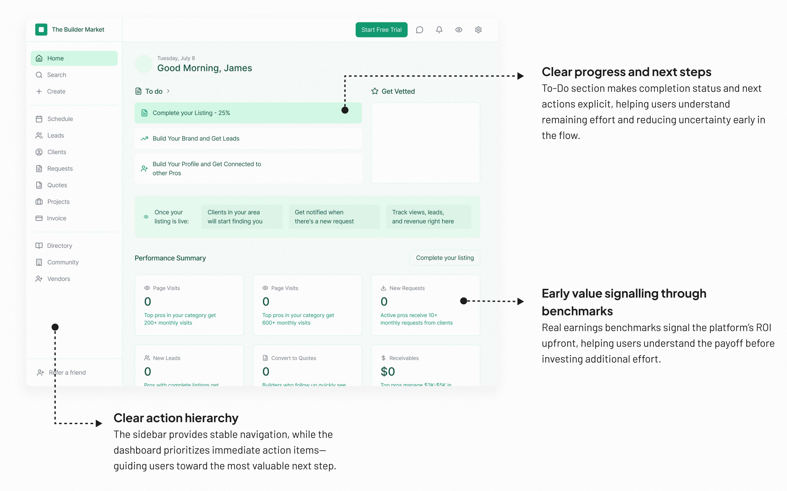
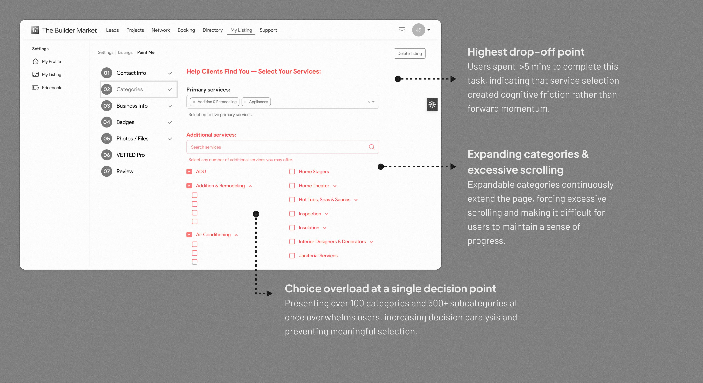
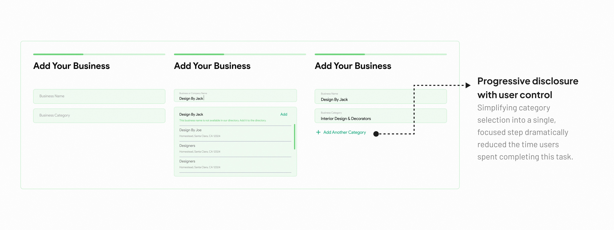

Home Service Marketplace Platform
Increasing conversions of home service professionals in the Builder Market Platform
What is Builder Market?
Builder Market is two-sided marketplace that connects homeowners seeking home services with professionals who provide them. Homeowners can easily find and book trusted professionals for their home improvement needs, while service providers can expand their customer base and grow their businesses through the platform.

Problem Framing
As a design intern at an early-stage startup, I proposed structuring my internship around measurable business impact rather than isolated design deliverables.
I asked
“What is the most pressing business problem right now?”
Like any marketplace, its success depends on balance: demand from homeowners and supply from professionals. Without enough active professionals, the platform’s value collapses.
Investigating the Problem
To learn where professionals were disengaging in the onboarding flow, I started with examining website analytics, session recordings and click behavior during the signup flow to identify early friction signals.
Session recordings showed repeated rage clicks on onboarding overlays. Users were trying to move forward, but the interface was blocking them.
With limited funnel tracking for post-login listing creation, I used heuristic evaluation to uncover structural friction within the flow. Here’s what I found about listing creation flow,
Lacked visible progress indicators, making effort difficult to estimate.
Data collection over value demonstration
Marketing communicated value, but the product did not demonstrate it during onboarding.
Competitor Analysis
To contextualize the findings, I analyzed how competitor marketplaces onboard professionals.
I observed that,
competitors introduced users to dashboards and management tools early in onboarding, allowing professionals to experience potential value before committing to detailed configuration.
Angi previously “Angie’s List”
Jobber
Houzz Pro
Design Strategy
Competitor analysis revealed that our onboarding emphasized setup before demonstrating value. This insight led to a reframing of the problem before exploring solutions.
How might we reduce friction in onboarding flow while helping professionals experience value earlier in the journey?
Concepts, Iterations & Prioritisation
Wireframes were reviewed collaboratively with engineering and the product owner, focusing on feasibility and business requirements. Input and user flows were refined through these discussions.

Technology Constraints
High-Impact Friction
Solution Overview
1BEFORE
High effort, low value
Business listing page emphasized data collection over value discovery—assuming high commitment before earning user confidence.

1AFTER
Shift from effort to value
The redesigned dashboard reframes onboarding around value discovery rather than form completion.

2BEFORE
Too many decisions too early
Users are asked to fully define their services before understanding the platform’s value or payoff.

2AFTER
Incremental commitment over upfront definition
The redesigned input field aligns user effort with readiness, reducing cognitive load at the highest drop-off point.

Outcome
The redesigned onboarding structure was finalised and implementation began during my time on the project. While visual refinements continued beyond my internship, the core structural shifts were established.
Next steps
Following implementation, I reviewed session recordings of the production design to evaluate real-world interaction patterns. While the structural improvements reduced major friction points, new interaction inefficiencies surfaced.
Reflection
Working within startup constraints sharpened my ability to prioritize high-leverage friction points rather than attempting to optimize every interaction. It also highlighted the importance of validating interaction details early.
Proposing structure in startup environments proved essential. It ensured my design decisions connected to measurable outcomes.
If revisiting the project, I would incorporate structured usability testing before implementation to validate interaction efficiency and reduce micro-friction before launch.